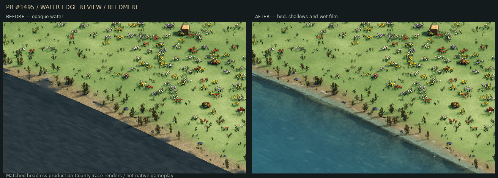
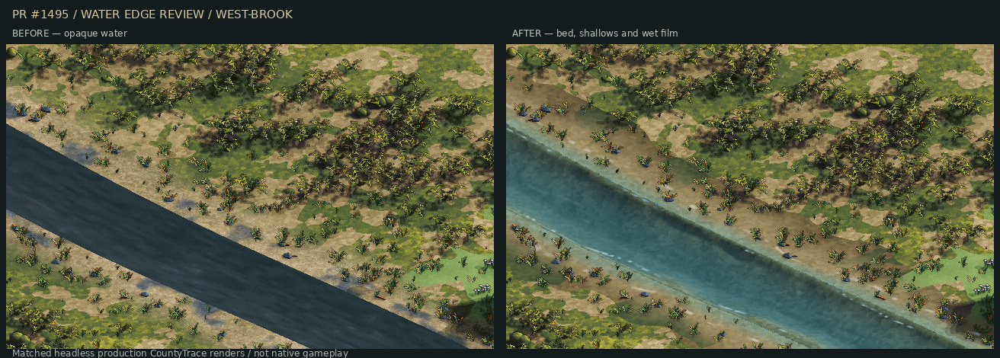

Where the reeds grow
31 October 2026
A fishing town should begin before its first house. The approach ought to tell you where the water is: upright reeds in broken groups, a lower grassy bank, then the open space where boats land and people work.
This pass gives the county a first layer of that shoreline character. The planting reads the real lake edge and river shape, so it can gather along a bend rather than follow the edge of a field or a scenery window. The same place keeps the same plants when the view moves.
Room beside the water
The first additions are dry-bank rushes and reeds. They use the existing ground and clearance rules, leaving roads, cultivated land and occupied features clear. Open water keeps its own rules. A plant's closeness to a lake does not mean it can stand in the lake, or that a boat can float beside it.
The groups need gaps. A solid fringe would hide the waterline and make every bank feel fenced off. Broken patches leave room to approach the water, with lower grass and exposed wet earth between the colonies.
The bank needed more than reeds
The first comparison exposed a bigger problem. Bright meadow grass ran straight to a dark cut edge, and the lake wore the same busy white foam as moving water. Adding upright plants could not hide that.
The graphical pass gives the bank a damp, broken margin. Dark runnels spread through patches of earth and low grey shingle. Stranded twigs and smaller satellite plants break up the repeated clumps. Reeds have separate stems, arched leaves, dry blades and occasional brown seed heads. The inland floor gradually returns to its original meadow or woodland colours.
The water needed another pass. Looking at the beach made the missing layers clear: wet ground beneath a thin reflective film, a visible shallow bed, then deeper colour where the bottom falls away. A flat opaque surface could not give us that edge.
The lake and brook now have a separate submerged bed beneath transmitting water. Silt tongues break up the shallows, while reflected light and small broken lapping crests soften the bank. The bed darkens through blue-green as it deepens. The dry ground keeps its walking height, and the water keeps its existing physical outline.
These are views from the production scenery renderer, captured headlessly with matching cameras and light. They are not native gameplay captures.


Towards a waterfront town
Reedhythe, the fishing town's working name, already has a first plan with a quay, jetties, fish market and boatyard. Its next pass needs to grow from the shore itself: a supported landing near the water, a busy working quay, then narrow homes climbing behind stone walls and stairs.
The new scenery is a foundation for that work. Natural banks should carry the planting; the landing, boat slip and market routes need open working space. Slate, timber and stone should have different jobs in the silhouette, from the low open boat shed to the taller homes above it.
There is still a town to refine. This pass does not finish its waterfront, animate its boats or settle the final reference comparison. It gives the surrounding land a clearer identity and records the rules the next town pass will need to follow.